A360 para Coordenação
Esta página é para quem distribui o trabalho e acompanha a equipe. Além de tudo que a arquiteta usa, você tem o Painel operacional, Capacidade e fluxo, Alertas (com tratamento), Pessoas e a revisão interna dos entregáveis.
endereço: architecture-360-production.up.railway.appdados do Vobi: sincronizados pela API todos os dias de manhãVobi somente leituraclique nas imagens para ampliar
O que é o A360 e de onde vêm os dados
O Architecture 360 (A360) é a central de trabalho da equipe de arquitetura da rucelle. Ele mostra, num só lugar, o que está no Vobi — projetos, tarefas, prazos, responsáveis — e acrescenta o que o Vobi não tem: agenda, reuniões com ata, entregáveis com aprovação do cliente, linha do tempo e alertas.
De onde vêm os dados
Do Vobi, automaticamente, todos os dias de manhã, pela API: ninguém exporta nem importa nada. A data da última sincronização aparece no topo de cada tela ("dados do Vobi de …"). O que você mudar no Vobi aparece aqui na sincronização seguinte.
O A360 não altera o Vobi
Tudo que vem do Vobi é somente leitura (o selo "Vobi · somente leitura" fica no topo). Tarefa, prazo e responsável continuam sendo editados no Vobi, como hoje.
O que é registrado no A360
Compromissos da sua Google Agenda, reuniões (pauta, ata, decisões, encaminhamentos), entregáveis e aprovações do cliente, comentários e históricos. Nada disso vai para o Vobi nem para o cliente.
Não é avaliação
Os números do A360 descrevem o trabalho como está registrado no Vobi. Não há ranking, nota ou cobrança automática. Dado que falta na fonte aparece como limitação, nunca como culpa.
Primeiro acesso
- Abra architecture-360-production.up.railway.app (funciona no computador e no celular).
- Entre com seu e-mail @rucelle.com.br e a senha provisória que você recebeu.
- O sistema pede uma senha nova (mínimo 10 caracteres). Guarde a nova; a provisória deixa de valer.
- Para trocar a senha depois: botão Senha no canto superior direito.
- Esqueceu a senha? Peça ao administrador (Rodrigo) uma redefinição: ele gera uma nova provisória.
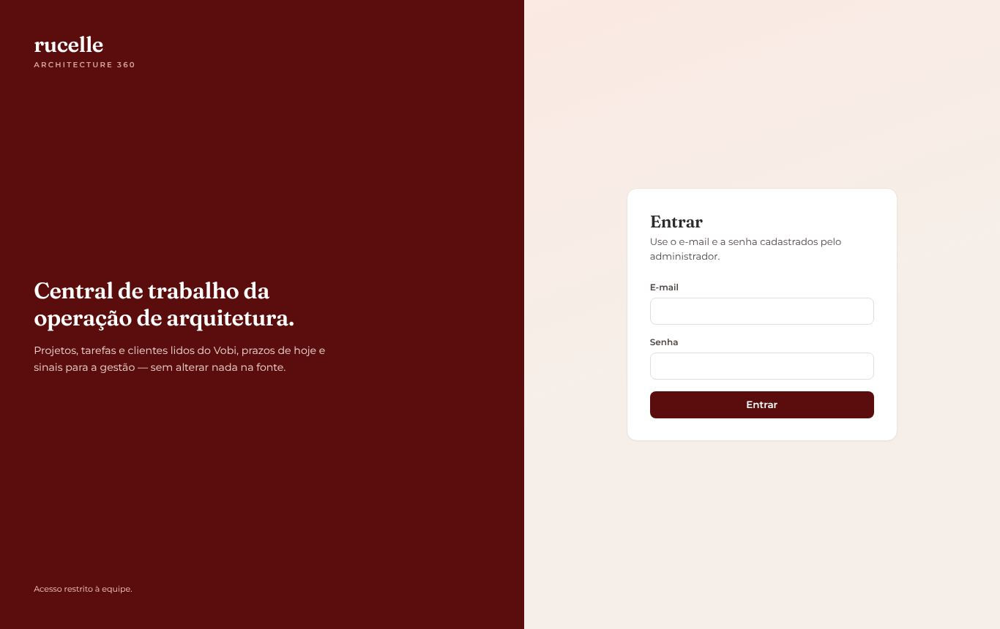
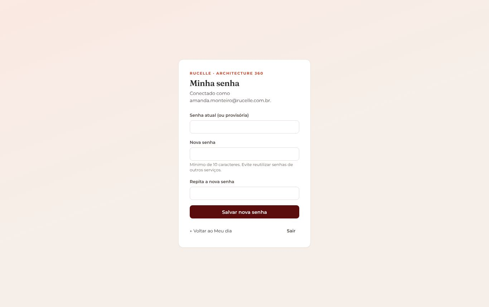
Painel de Gestão (operacional)
Abre ao entrar. É a visão da equipe: tarefas por situação de prazo, volume por pessoa (informação de carga, não comparação), gargalos por etapa com o nome original do Vobi, projetos críticos, divergências e entregáveis.
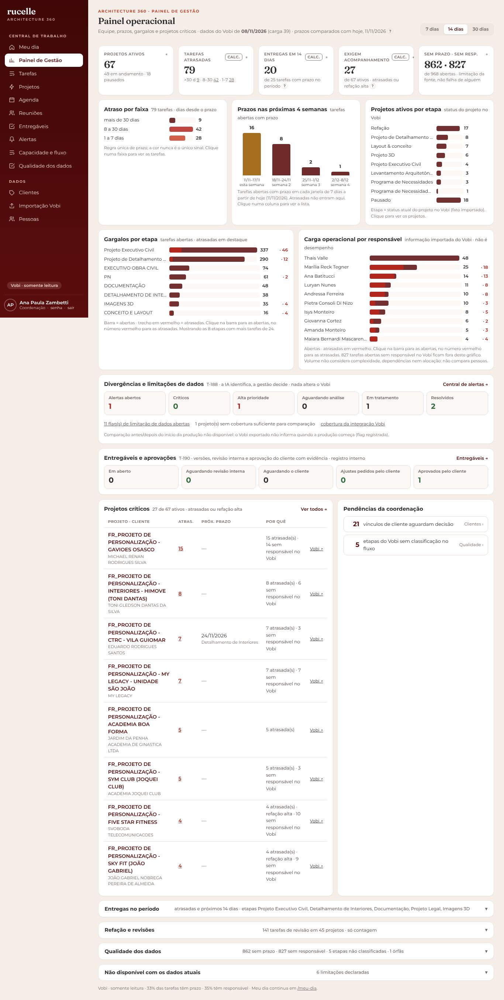
- Cada número é clicável e abre a lista de tarefas correspondente.
- Janela 7 / 14 / 30 dias no topo.
- Bloco Divergências e limitações: alertas abertos, críticos, flags de limitação de dados.
- Bloco Entregáveis e aprovações: o que aguarda revisão interna (sua), o que aguarda o cliente, ajustes pedidos.
Agenda gerencial
A Agenda é onde a gestão programa o trabalho das arquitetas. Uma tela só reúne as atividades programadas no A360, os compromissos do Google e, se você marcar, os prazos das tarefas do Vobi. Rodrigo, Flavia, Thais e Ana Paula veem a equipe toda; cada arquiteta vê só a própria agenda.
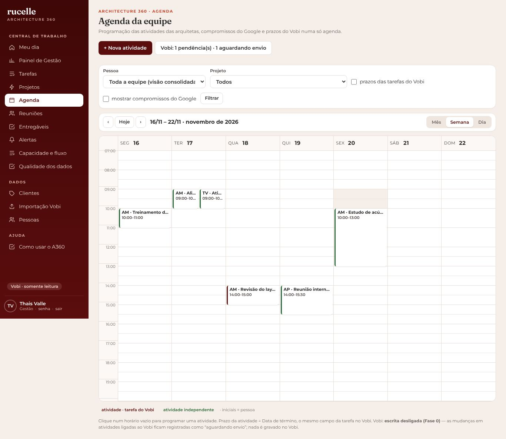
Ver
- Pessoa: "Toda a equipe" mostra a visão consolidada; escolha um nome para ver a agenda de uma pessoa.
- Projeto: mostra só o que é daquele projeto.
- Prazos das tarefas do Vobi: acrescenta, tracejados, os prazos das tarefas que ainda não foram programadas no A360. Clique num deles para programar.
- Google: na visão da equipe vem desligado (as agendas compartilhadas repetem os compromissos); marque "mostrar compromissos do Google" se precisar. Na agenda de uma pessoa ele aparece.
- Mês, Semana, Dia e as setas mudam o período. Atividade de vários dias aparece com a marca de início e a de prazo.
Programar
- Clique em + Nova atividade ou num horário vazio da agenda (já vem com o dia, a hora e a pessoa).
- Escolha o tipo: tarefa que já existe no Vobi (traz nome, etapa, responsável e datas dela), nova tarefa no projeto do Vobi ou independente (reunião interna, treinamento, estudo, alinhamento, administrativa).
- Para tarefa do Vobi: escolha Projeto, Etapa e a tarefa. Os nomes são os do Vobi.
- Defina Responsável, Data de início e Data de término (prazo) com horário, Prioridade e, se quiser, a Descrição com as orientações.
- Clique em Programar atividade. Ela aparece na agenda da arquiteta na hora.
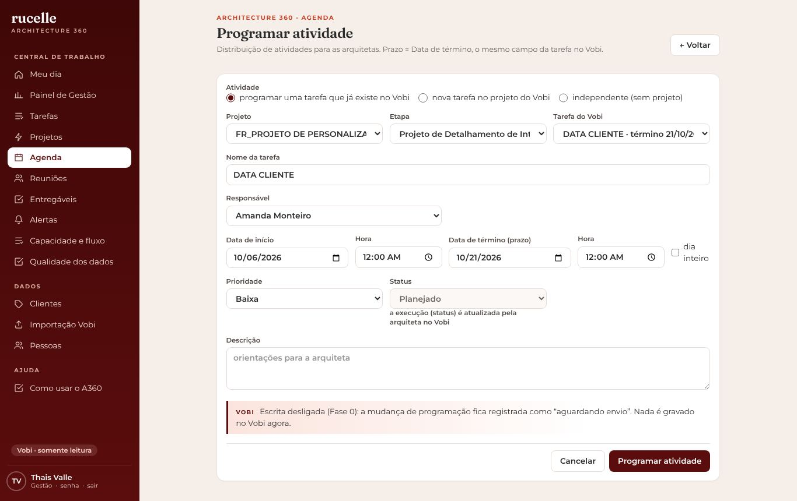
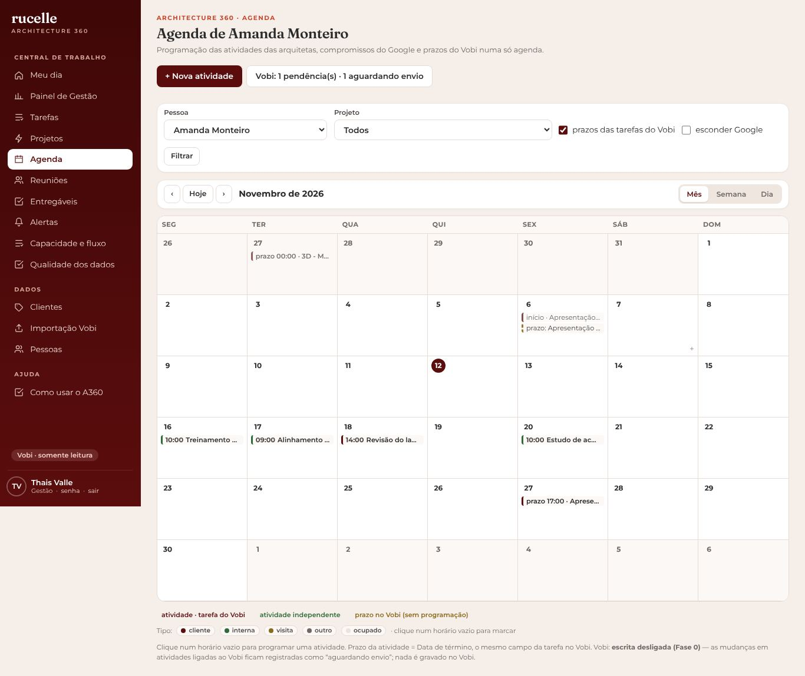
Vínculo com o Vobi
- O vínculo é pelo número do projeto, da etapa e da tarefa no Vobi. A mesma tarefa não pode ser programada duas vezes.
- O prazo da atividade é a Data de término da tarefa no Vobi: um prazo só, sem duplicar.
- Por enquanto o A360 não grava no Vobi. O que você muda numa atividade ligada ao Vobi fica como "Aguardando envio ao Vobi" e será enviado só quando a escrita for autorizada. Até lá, se a mudança precisar valer no Vobi, faça também no Vobi.
- Todo dia de manhã o A360 lê o Vobi. O que mudou só no Vobi é adotado na atividade e registrado no histórico.
- Se o mesmo campo mudou no A360 e no Vobi, a atividade vai para Conflitos: abra e escolha "vale o A360" ou "vale o Vobi".
- Se uma tarefa ligada não existir mais no Vobi, a atividade é mantida e aparece em Pendências como divergência.
- A execução (Status: Planejado, Em andamento, Concluído) é atualizada pela arquiteta no Vobi; o A360 só mostra.
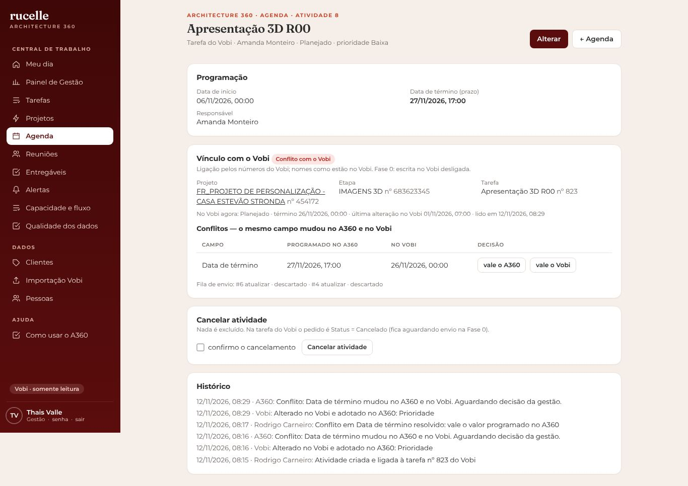
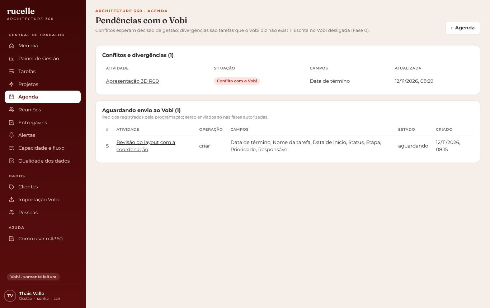
Alterar e cancelar
- Abra a atividade e clique em Alterar. O tipo e o projeto não mudam depois de criados.
- Cancelar nunca exclui: a atividade fica com status Cancelado e sai da agenda; o histórico continua.
- Para a arquiteta aparecer como responsável de tarefas do Vobi, o nome dela no Vobi precisa estar ligado ao e-mail em Pessoas, incluindo os responsáveis que o Vobi informa só por número.
Quais projetos entram na Agenda (recorte 2026)
- Entram os projetos com data de início prevista no Vobi em 2026 ou depois. Projeto sem data de início prevista não entra sozinho.
- Projetos anteriores continuam nos demais módulos do A360 como estavam, mas ficam fora da Agenda, da sincronização e dos indicadores da Agenda.
- Para trazer um projeto que ficou de fora (anterior a 2026, sem data de início prevista ou arquivado): em Projetos, clique em Buscar projeto no Vobi, procure pelo nome ou pelo número, confira os dados e clique em Confirmar incorporação ao A360. As tarefas e etapas entram na Agenda com os números do Vobi. Se o projeto já faz parte, o A360 avisa e abre o projeto; nada é duplicado.
- Cada incorporação fica registrada com quem pediu, quando e a situação. Nada é gravado no Vobi.
Capacidade e fluxo
Responde a três perguntas: quem está com o quê, o que vence em cada semana e onde o trabalho está parado. É a tela para usar na reunião de distribuição.
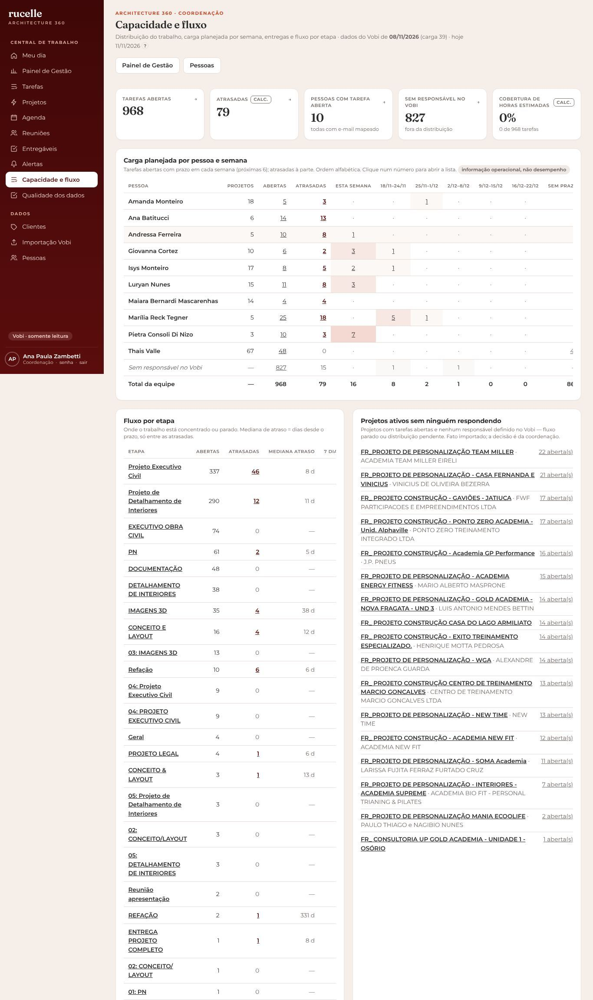
- Carga planejada por pessoa e semana: tarefas abertas com prazo em cada semana (células mais escuras = mais tarefas); atrasadas e sem prazo à parte. Clique em qualquer número para ver as tarefas.
- Fluxo por etapa: abertas, atrasadas, mediana de dias de atraso, sem responsável, sem prazo, projetos e pessoas por etapa — mostra o gargalo.
- Projetos ativos sem ninguém respondendo: projetos com tarefa aberta e nenhum responsável no Vobi. Distribua no Vobi.
- Entregas próximas: tarefas das etapas de entrega, atrasadas e por semana, com projeto e responsável.
- Limitações desta leitura: cobertura de horas estimadas, tarefas sem prazo/sem responsável, nomes do Vobi sem e-mail. Ausência de dado nunca é conformidade.
Alertas e divergências
O A360 cruza reuniões, decisões e aprovações (A360) com tarefas, revisões e refações (Vobi) e aponta possíveis divergências — por exemplo, refação depois de uma aprovação do cliente, encaminhamento vencido, decisão sem tarefa aberta. Cada alerta traz as evidências com data e trecho.
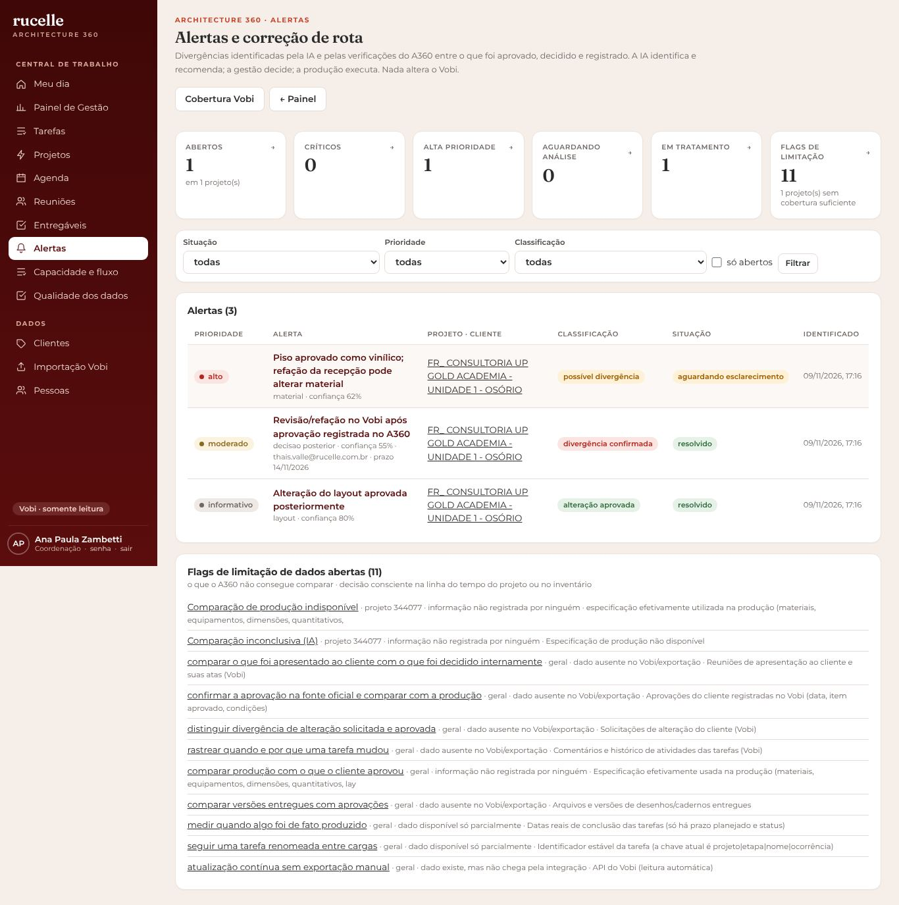
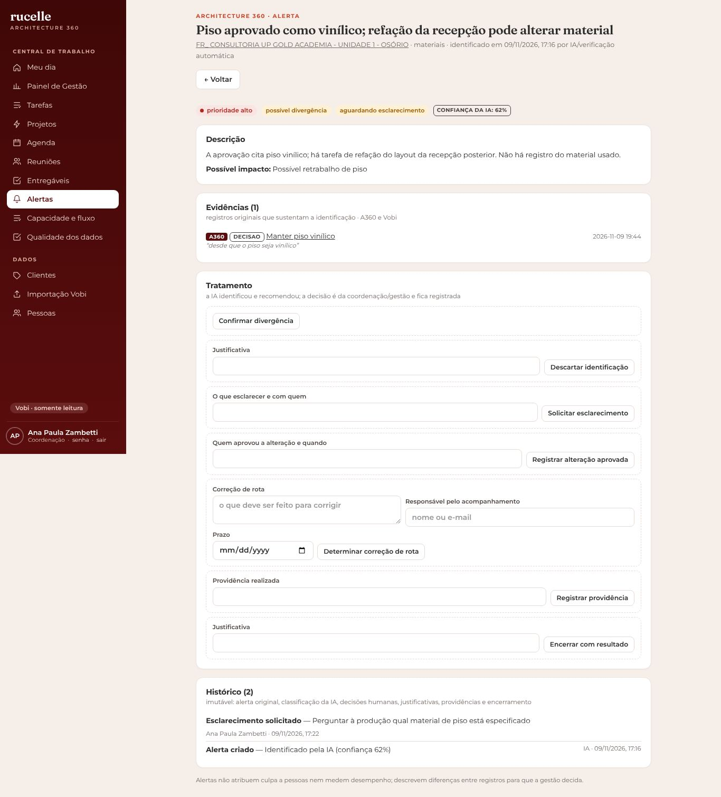
- Abra o alerta e leia as evidências. Classificação: confirmada, possível, alteração aprovada, inconclusivo, corrigida, limitação.
- Assumir análise → confirmar ou descartar (com justificativa) → se confirmado, correção de rota com direcionamento, responsável e prazo → providências → encerrar com resultado.
- Pode solicitar esclarecimento ou registrar que foi uma alteração aprovada pelo cliente (não é divergência).
- Flags de limitação: dizem o que o A360 não consegue comparar e por quê (ex.: aprovações não vêm do Vobi). Encerram só por resolução ou aceite consciente, com justificativa.
Entregáveis — revisão interna
A arquiteta registra o entregável e a versão; você faz a revisão interna. Só depois de aprovado internamente ele pode ser marcado como enviado ao cliente.
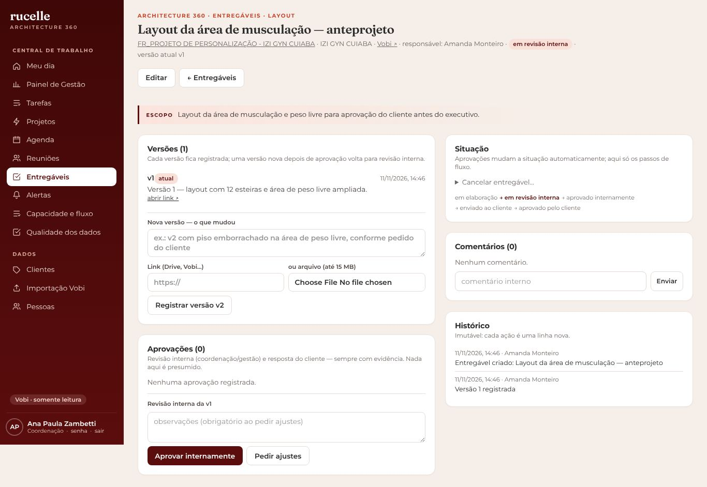
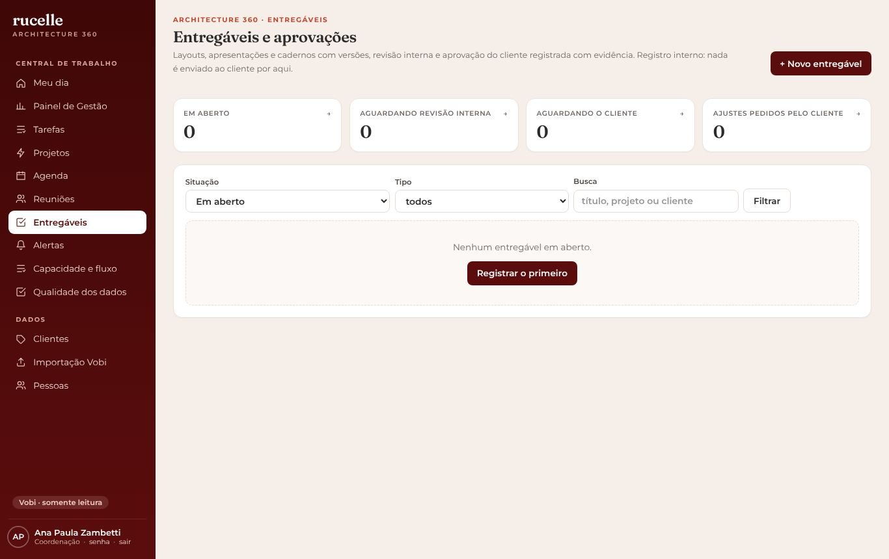
- No Painel ou em Entregáveis, filtre aguardando revisão interna.
- Abra, veja a versão (link ou arquivo) e decida: Aprovar internamente ou Pedir ajustes (observação obrigatória).
- Acompanhe "enviado ao cliente" e "ajustes solicitados pelo cliente" — a resposta do cliente é registrada pela arquiteta com evidência.
- Cancelar um entregável exige justificativa e fica no histórico.
Reuniões e linha do tempo
Você vê todas as reuniões. Use a linha do tempo do projeto para reconstruir o que foi decidido e aprovado antes de uma correção de rota ou de uma conversa com o cliente.
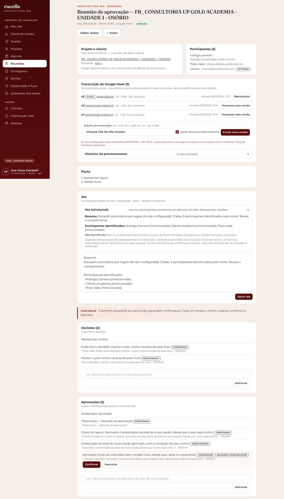
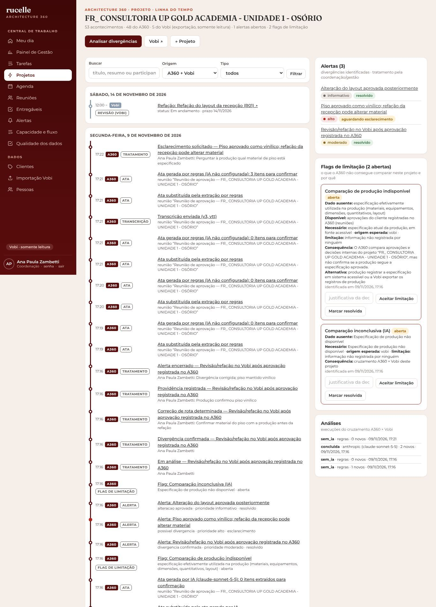
- Transcrição do Meet: qualquer pessoa que vê a reunião pode enviar; a IA gera a ata; itens ficam "confirmar" até alguém confirmar.
- Reprocessar só quando a transcrição mudar: o A360 evita chamadas repetidas à IA e tem teto diário de custo.
- Encaminhamentos vencidos aparecem como alerta inconclusivo, não como cobrança.
Pessoas e Projetos
O Vobi exporta só o nome do responsável. Em Pessoas fica o vínculo nome → e-mail @rucelle, que define o que cada arquiteta vê no Meu Dia. Sem vínculo, a pessoa fica fora dos indicadores individuais.
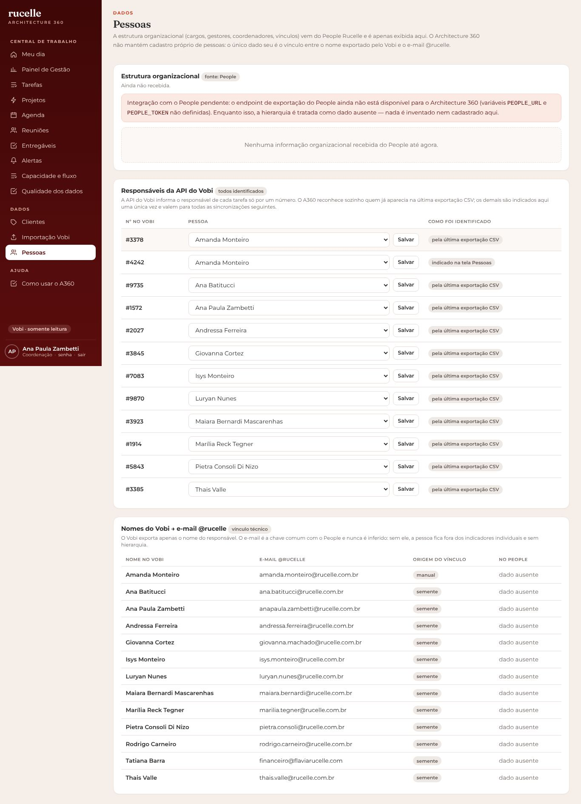
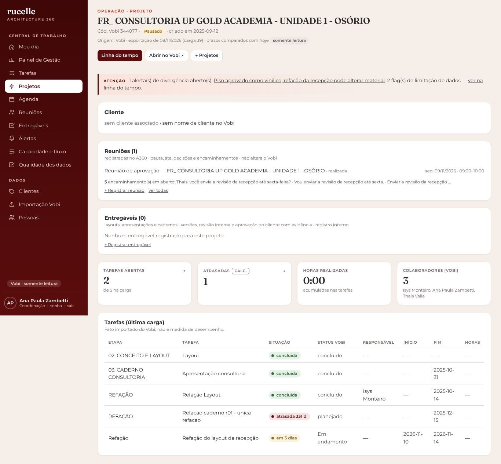
- Nome novo no Vobi (pessoa nova ou grafia diferente)? Preencha o e-mail em Pessoas.
- Vínculo projeto × cliente ambíguo é resolvido pela coordenação em Projetos, não pelas arquitetas.
- Hierarquia (quem responde a quem) não é cadastrada aqui: vem do People.
Rotina da coordenação
Diário (10 min)
- Painel: atrasadas e críticos.
- Entregáveis aguardando revisão interna.
- Alertas novos (críticos e alta).
Semanal — distribuição
- Capacidade e fluxo: carga por pessoa e semana.
- Projetos sem responsável → distribuir no Vobi.
- Entregas próximas × combinado com clientes.
Antes de falar com o cliente
- Linha do tempo do projeto.
- Entregáveis e aprovações registradas.
- Alertas abertos do projeto.
Teste rápido
Uma arquiteta está com 14 tarefas na próxima semana e outra com 2. O que a tela de Capacidade está dizendo?
Um alerta aponta refação depois de uma aprovação do cliente. Primeiro passo?
Entregável chegou em 'revisão interna'. Quem aprova?
Os dados do Vobi no A360 são de quando?
Você mudou no A360 o prazo de uma atividade ligada ao Vobi e, no mesmo dia, a arquiteta mudou o prazo no Vobi. O que acontece na leitura da manhã?
Respostas erradas mostram a correta. Nada é registrado; é só para você.